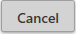

Adding a Job
To add a Job as a Scheduled Task, select the desired task from the Jobs list. According to whether the Job has been defined with a Custom Connection or an Autodesk® Login, the process is slightly different.
Custom Connection
The Add a Job process is controlled by the Connection Type assigned to the Job. In this case, it is a Custom Connection.
All Jobs having the not deployed icon (as opposed to the deployed icon) are available for adding. When removing a scheduled Job (see following section), the opposite is true and only currently deployed Jobs will be available for removal.
Note — An undeployed job must be selected from the Job Listing for the Add a Job as a scheduled task button to be enabled. If either no job is selected or the selected job is already deployed, the button will appear disabled and not be available for selecting.
Selecting an undeployed job and pressing the Add a Job as a scheduled task  button brings up the following Add Job to Windows Task Scheduler Server selection and confirmation screen. Click on the Deploy to Server field to bring up a list of all defined Servers.
button brings up the following Add Job to Windows Task Scheduler Server selection and confirmation screen. Click on the Deploy to Server field to bring up a list of all defined Servers.
Along with providing confirmation, the dialog window also shows the Job Name, Job Type, Schedule Type, and scheduling details.
Pressing  cancels the process without making any changes to the system. Press  to confirm that the process should proceed and add the Job to the Windows Task Scheduler.
to confirm that the process should proceed and add the Job to the Windows Task Scheduler.
In addition to displaying the Add verification dialog window, several data fields have been updated and new data appears on the screen. The ‘Deployed’ icon has been updated with the new status, the deployed-to Server name has been incorporated into the display name and the Job properties Deployed to Machine field updated to display the Server name. Additionally, the Job entry on the Listing panel now displays the Job status information regarding Next and Last run dates and last run Result. This information is updated automatically each time the screen is refreshed, according to the current setting of the Server Location Refresh Filter, as described above.
Autodesk® Connection
Deployment of a Job with an Autodesk® Connection assigned to it is mostly the same process as that with a Custom Connection. There are, however, some slight differences that are worthy of mention.
Job Connection Must be Same as the Current Connection
When deploying an Autodesk® Connection, the current user must be logged onto Naviate Cloud Manager with an Autodesk® Connection. Additionally, this must be the same Autodesk® Connection defined in the Job being deployed.
Failure to be logged on with the same credentials will result in the above message.
First Time Deployment For Same Server/Autodesk® Login User
When deploying a Job having an Autodesk® Connection, there are two possible paths. The first occurs when deploying an Autodesk® Connection for a specific combination of Naviate Cloud Manager server and Autodesk® Login user for the first time.
After pressing the Add a Job as a scheduled task button, the following screen appears.
So far, the process is the same as with a Custom Connection.
The difference occurs when the user, after selecting a server for the job to be deployed to, is next prompted for the customary Autodesk® Login.
As described above, Autodesk® Connection jobs require the user to first login with same Autodesk® credentials that are assigned to the job. Now, they must perform a complete login for the defined connection. This guarantees creation of a new Refresh Token, which ensures that when the Job runs, it will have an active Access Token with which to perform all required tasks.
After successfully entering the Autodesk® Login password, the usual Authorization display/confirmation dialog window is displayed.
Once the Allow button has been pressed, because this is the first deployment of a Job for the specified Server and Autodesk® Connection, the system performs the additional step of deploying a Token Refresh Job. The Token Refresh Job is responsible for making sure there is always a current Refresh Token available for use by each deployed Job that uses an Autodesk® Connection.

The Token Refresh Job runs weekly to make sure it is kept active by applying it within the designated time window. This ensures it will be available for supplying login credentials for scheduled jobs without requiring human intervention.
Observe the name assigned to the Token Refresh Job.
The TR indicates this is a Token Refresh job. The second section of the name IFRANKEL3, located between the 'TR-' and the '_' refers to the server to which the job is deployed. The third and final section of the name ifrankel@microdesk.com refers to the Autodesk® Login name. As mentioned above, there will always be one Token Refresh Job for each Deployment Server/Autodesk® Login name combination.
Before clicking the  button to complete the process, the user must designate a day and a time for the Weekly Token Refresh Job to run. If running on a personal machine or some other computer that is subject to downtime, select a day and time when the computer will be running. If, however, the worst were to occur and the token expires, it can easily be reactivated by using the Reactivate Token Refresh Job.
button to complete the process, the user must designate a day and a time for the Weekly Token Refresh Job to run. If running on a personal machine or some other computer that is subject to downtime, select a day and time when the computer will be running. If, however, the worst were to occur and the token expires, it can easily be reactivated by using the Reactivate Token Refresh Job.
Additional Deployments To the Same Server/Autodesk® Login
Once a Token Refresh Job exists for the Server/Autodesk® Login, deployment of new Jobs is essentially the same as with Custom Connection Jobs.
From this point on, the data entry process and job data displayed is essentially the same as shown above with the Custom Connection. The only variation will depend on how old the current Refresh Token for the specified Server and Autodesk® Connection is.
If the current Autodesk® login is still active (less than 60 minutes old), after pressing the Add a Job as a scheduled task  button, selecting the Server and clicking the Add button, the familiar Authorization display/confirmation dialog window is displayed.
button, selecting the Server and clicking the Add button, the familiar Authorization display/confirmation dialog window is displayed.
As usual, press the Allow button to complete the process.
If, however, a longer period of time has transpired than the 60 minutes referred to above, the user will need to repeat the login process just described — entering the Autodesk® login email, password, then pressing the Allow button to complete the process.
Note — The Autodesk® login Access Token (expires in 60 minutes) is not to be confused with the Refresh Token viability (expires in 15 days or after one use). The former refers to how long an existing token remains active. The latter refers to how long a Refresh Token remains active and available for one-time use to obtain a new Access Token.